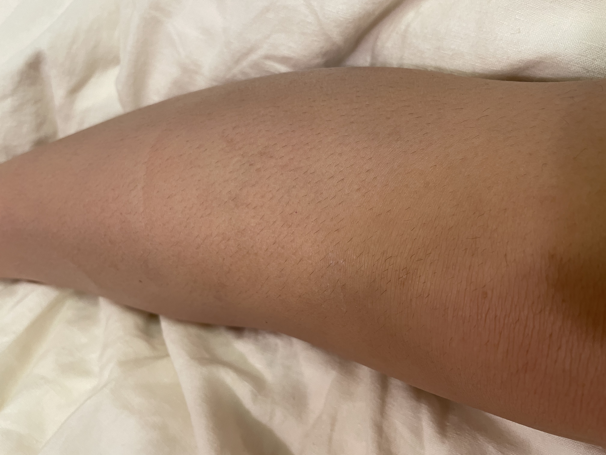

last experienced: 02.22.2021
Winter and long pants means I don't have to shave my legs very often. I usually forgot about them all together and I don’t mind how they look. What usually breaks me is the feeling of stubble on my legs. They feel so prickly and when my leg runs up against the other, it sends shivers down my back, it's so uncomfortable. I try to avoid feeling them until I’m ready to shave.